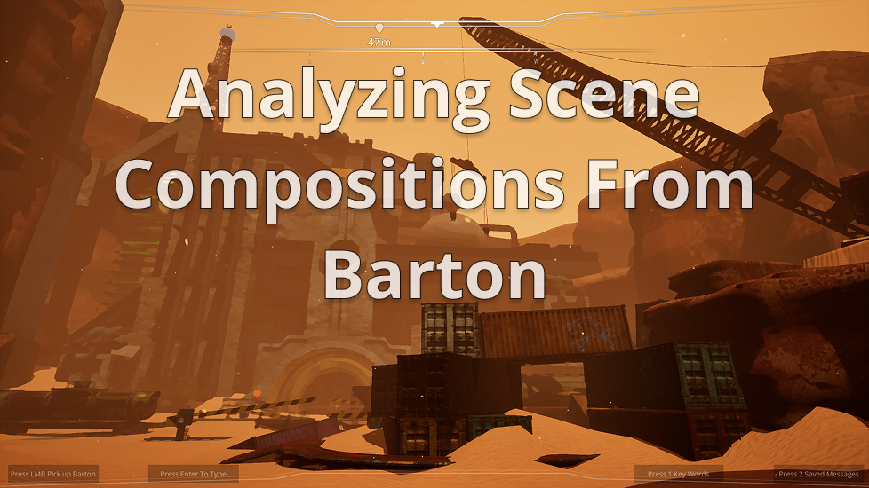

<style>
  .hero {
    text-align: center;
  }
  
  .card {
    text-align: center;
  }
  
  .card h3 {
    text-align: center;
    font-size: clamp(1.95rem, 3.6vw, 2.775rem);
    background: linear-gradient(135deg, #5eedb0, var(--brand-2));
    -webkit-background-clip: text;
    -webkit-text-fill-color: transparent;
    background-clip: text;
    animation: showcase-glow 4s ease-in-out infinite;
    font-weight: 800;
  }
  
  .card p {
    text-align: center;
  }
  
  @media (max-width: 960px) {
    .card h3 {
      font-size: clamp(1.5rem, 5vw, 2.775rem);
    }
  }
</style>
<section class="hero fade-in">
  <h1>Development Blog</h1>
  <h2>These posts:</h2>
  <p>Explore a variety of topics discussing in depth level design process & lessons learned from projects I've contributed to!</p>
</section>

<section class="grid">
  <article class="card fade-in">
    <a href="blog/analyzing-scene-compositions-in-barton.html">
      <figure class="media-frame contain">
        
      </figure>
    </a>
    <h3>Analyzing Scene Compositions From Barton</h3>
    <p>Introduction: Well howdy! This blog is a collection of scene compositions from Barton, A first person sci-fi themed puzzle adventure where the player has an open dialogue with a companion bot named Barton. This blog analyzes five scene / shot compositions from environments I've created in Barton, and discusses how they frame and highlight important…</p>
    <a class="btn" href="blog/analyzing-scene-compositions-in-barton.html">View Analyzing Scene Compositions From Barton</a>
  </article>
</section>
